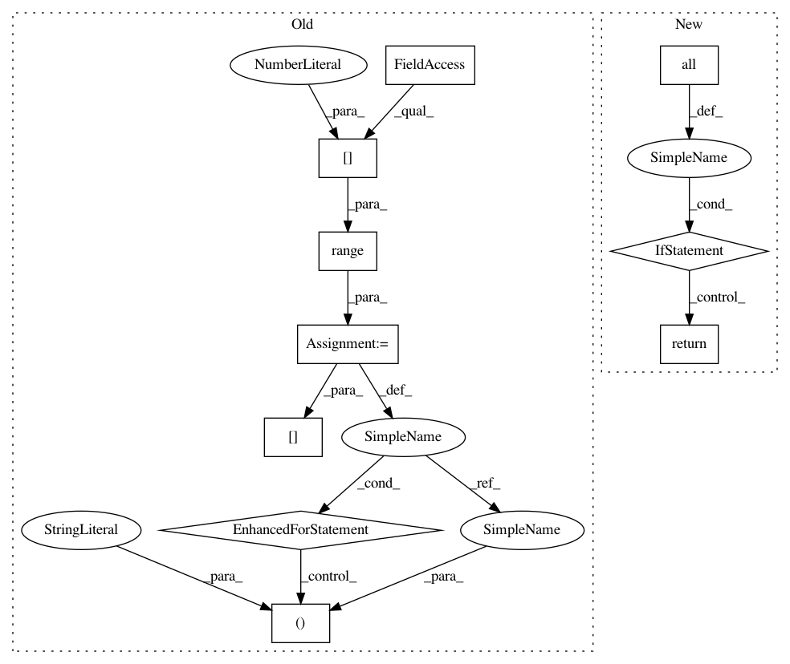

c4a94e894555a7e59726fe457e6bb98d80390146,btb/selection/samples/grid_selector.py,GridSelector,propose,#GridSelector#,62
Before Change
// Return the first candidate we haven"t seen before
candidates = self.create_candidates()
for i in range(candidates.shape[0]):
if candidates[i, :] not in self.past_params:
return candidates[i, :]
After Change
// Return the first candidate we haven"t seen before
for candidate in self.create_candidates():
// if we"ve reached the end of iteration, set the finished flag
if (candidate == self._last_candidate()).all():
self.finished = True
return candidate
if candidate not in self.past_params:
return candidate
In pattern: SUPERPATTERN
Frequency: 3
Non-data size: 10
Instances
Project Name: HDI-Project/ATM
Commit Name: c4a94e894555a7e59726fe457e6bb98d80390146
Time: 2017-10-13
Author: bcyphers@mit.edu
File Name: btb/selection/samples/grid_selector.py
Class Name: GridSelector
Method Name: propose
Project Name: freelunchtheorem/Conditional_Density_Estimation
Commit Name: 0911c4f8477ee084c4346616d10387d56a8c58f1
Time: 2018-04-04
Author: jonas.rothfuss@gmx.de
File Name: cde/density_estimator/BaseDensityEstimator.py
Class Name: BaseMixtureEstimator
Method Name: sample
Project Name: freelunchtheorem/Conditional_Density_Estimation
Commit Name: 0911c4f8477ee084c4346616d10387d56a8c58f1
Time: 2018-04-04
Author: jonas.rothfuss@gmx.de
File Name: cde/density_simulation/GMM.py
Class Name: GaussianMixture
Method Name: simulate_conditional
Project Name: HDI-Project/ATM
Commit Name: c4a94e894555a7e59726fe457e6bb98d80390146
Time: 2017-10-13
Author: bcyphers@mit.edu
File Name: btb/selection/samples/grid_selector.py
Class Name: GridSelector
Method Name: propose